조경기능사 (2003-10-05 기출문제)
1과목: 조경일반
1. 우리나라 전통 조경의 설명으로 옳지 못한 것은?
- 신선 사상에 근거를 두고 여기에 음양 오행설이 가미 되었다.
- 연못의 모양은 조롱박형, 목숨수자형, 마음심자형 등 여러가지가 있다.
- 네모진 연못은 땅, 즉 음을 상징하고 있다.
- 둥근 섬은 하늘, 즉 양을 상징하고 있다.
(정답률: 90%)

2. 자연환경 조사사항과 가장 관계 없는 것은?
- 식생
- 주위 교통량
- 기상조건
- 토양조사
(정답률: 92%)
3. 다음 중 비대칭이 주는 효과가 아닌 것은?
- 단순하기 보다는 복잡성을 띠게 된다.
- 정돈성은 없으나 동적(動的)이다.
- 무한한 양상(樣相)을 가질 수 있다.
- 규칙적이고 통일감이 있다.
(정답률: 81%)
4. 일본 정원의 특색은 일반적으로 다음 중 어디에 치중 하는가?
- 실용적
- 기교와 관상적
- 생활과 오락적
- 사의적
(정답률: 82%)
5. 다음 중 가장 오래된 정원은?
- 공중정원(hanging garden)
- 알함브라(Alhambra) 궁원
- 베르사이유(Versailles) 궁원
- 보르 비콩트(Vaux-le-Viconte)
(정답률: 81%)
6. 토피어리(topiary)란?
- 분수의 일종
- 형상수
- 보기 좋은 정원석
- 휴게용 탁자
(정답률: 94%)
7. 다음 중 운율미의 표현이 아닌 것은?
- 변화되는 색채
- 아름다운 숲과 바위
- 일정하게 들려오는 파도소리
- 폭포소리
(정답률: 73%)
8. 다음은 옥상정원에 대한 설명이다. 이 중 적합하지 않은 것은?
- 햇볕이 강한 곳이므로 건물 구조가 견딜 수 있는 한 큰 나무를 심어 그늘을 만든다.
- 잔디를 입히는 곳의 흙의 두께는 30 cm 정도를 표준 으로 한다.
- 건물 구조가 약할 때에는 큰 화분에 심은 나무를 이용하는 것이 좋다.
- 배수에 특히 유의하여 바닥에 관암거를 설치하고 10 cm정도의 왕모래를 깔도록 한다.
(정답률: 75%)
9. 다음 중 대칭(symmetry)의 미를 쓰지 않은 것은 어느 것인가?
- 영국의 자연 풍경식
- 프랑스의 평면기하학식
- 이태리의 노단건축식
- 스페인의 중정식
(정답률: 81%)
10. 조경미의 요소에 들지 않는 것은?
- 재료미
- 형식미
- 내용미
- 복합미
(정답률: 54%)
11. 르네상스시대 이탈리아 정원의 설명으로 옳지 않은 것은?
- 높이가 다른 여러개의 노단을 잘 조화시켜 좋은 전망을 살린다.
- 강한 축을 중심으로 정형적 대칭을 이루도록 꾸며진다.
- 주축선 양쪽에 수림을 만들어 주축선을 강조 하는 비스타 수법을 이용하였다.
- 원로의 교차점이나 종점에는 조각,분천,연못, 카스케이드 벽천, 장식화분 등이 배치된다.
(정답률: 67%)
12. 조경의 기본계획에서 일반적으로 토지 이용분류, 적지 분석, 종합배분의 순서로 이루어지는 계획은?
- 동선계획
- 시설물 배치계획
- 토지이용계획
- 식재계획
(정답률: 82%)
13. 동양식 정원에서는 연못을 파고 그 한 가운데 섬을 만드는 것이 공통된 수법인데 이러한 수법은 어떤 사상에 근거 한 것인가?
- 신선사상
- 유교사상
- 불교사상
- 기독교사상
(정답률: 93%)
14. 마스터플랜(master plan)의 작성이 위주가 되는 설계 과정은?
- 기본계획
- 기본설계
- 실시설계
- 상세설계
(정답률: 75%)
15. 건물의 남쪽면에 연못을 만들어 놓았을 때 고려해야 할 사항이 아닌 것은?
- 건물에서 연못이 잘 보이도록 건물과 연못사이에는 나무를 전혀 심지 않는다.
- 건물에 붙어있는 작은 연못일 때에는 퍼어걸러나 등나무 시렁으로 그늘을 만들어 준다.
- 연못의 수면에서 생기는 빛의 반사를 고려하여야 한다.
- 수면이 잔잔할 때 연못에 비치는 건물의 투영 효과를 잘 살릴수 있도록 한다.
(정답률: 75%)
2과목: 조경재료
16. 봄철에 꽃을 가장 빨리 보려면 어느 나무를 심어야 하는가?
- 말발도리
- 자귀나무
- 매화나무
- 배롱나무
(정답률: 92%)
17. 모래터에 심을 녹음수로 가장 적합한 나무는?
- 백합나무
- 가문비나무
- 수양버들
- 낙우송
(정답률: 49%)
18. 양수 수종만으로 짝지어진 것은?
- 향나무, 가중나무
- 가시나무, 아왜나무
- 회양목, 주목
- 사철나무, 독일가문비나무
(정답률: 66%)
19. 다음 수종 중 상록활엽수가 아닌 것은?
- 사철나무
- 꽝꽝나무
- 동백나무
- 플라타너스
(정답률: 75%)
20. 생장형에 의해서 만들어지는 수형을 보인 것 중 일반적인 느티나무의 수형은?
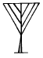
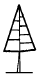
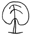
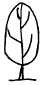
(정답률: 51%)
21. 3월에 노란꽃이 피며 가을이면 열매가 빨갛게 달리는 나무는?
- 산수유
- 남천
- 치자나무
- 명자나무
(정답률: 91%)
22. 산울타리용 수종의 조건이라고 할 수 없는 것은?
- 성질이 강하고 아름다울 것
- 적당한 높이의 윗가지가 오래도록 말라 죽지 않을 것
- 가급적 상록수로서 잎과 가지가 치밀할 것
- 맹아력이 커서 다듬기 작업에 잘 견딜 것
(정답률: 64%)
23. 일반적인 플라스틱 제품에 대한 설명이다 잘못된 것은?
- 가볍고 견고하다
- 내화성이 크다
- 투광성, 접착성,절연성이 있다
- 산과 알칼리에 견디는 힘이 크다
(정답률: 81%)
24. 자연석의 설명으로 틀리는 것은 어느 것인가?
- 산석 및 강석은 50 - 100cm 정도의 돌로 주로 경관석,석가산용으로 쓰인다.
- 호박돌은 수로의 사면보호,연못바닥,원로의 포장 등에 주로 쓰인다.
- 자연잡석은 지름 30 - 50cm 정도의 돌로 주로 견치석 쌓기에 쓰인다.
- 자갈은 지름 2 - 3cm 정도이며, 콘크리이트의 골재, 석축의 메움돌 등으로 주로 쓰인다.
(정답률: 65%)
25. 다음 토관 중 편지관은?
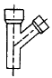
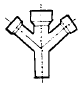
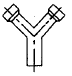
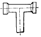
(정답률: 64%)
26. 물에 대한 내용이 잘못된 것은?
- 물은 호수, 연못, 풀 등의 정적으로 이용된다.
- 물은 분수, 폭포, 벽천, 계단폭포 등 동적으로 이용 된다.
- 조경에서 물의 이용은 동,서양 모두 즐겨 이용 했다.
- 수직의 벽에 설치된 수구로부터 물이 흐르도록한 구조를 가진 벽천은 다른 수경에 비해 대규모 지역에 어울리는 방법이다.
(정답률: 86%)
27. 석재의 비중에 대한 설명으로 틀린 것은?
- 비중이 클수록 조직이 치밀하다.
- 비중이 클수록 흡수율이 크다.
- 비중이 클수록 압축 강도가 크다.
- 석재의 비중은 2.0 - 2.7이다.
(정답률: 74%)
28. 다음 중 조경 재료를 분류할 때 생물 재료에 속하지 않는 것은?
- 수목
- 지피식물
- 초화류
- 목질재료
(정답률: 96%)
29. 조경 수목의 규격을 표시할 때 수고와 수관폭으로 표시 하는 것이 좋은 것은?
- 느티나무
- 주목
- 은사시나무
- 벚나무
(정답률: 60%)
30. 목재의 방부재로 사용하는 C.C.A의 성분이 바르게 짝지어진 것은?
- 크롬 - 구리 - 비소
- 크롬 - 구리 - 아연
- 철 - 구리 - 아연
- 탄소 - 구리 - 비소
(정답률: 75%)
31. 일반 조경공사 현장에서 가장 많이 사용하는 시멘트는?
- 조강포틀랜드 시멘트
- 알루미나 시멘트
- 보통포틀랜드 시멘트
- 실리카 시멘트
(정답률: 86%)
32. 다음 포장재료 중 내구성이 강하고 마모 우려가 없어 건물 진입부나 산책로 등에 주로 쓰이는 재료는?
- 벽돌
- 자갈
- 화강석
- 석재타일
(정답률: 72%)
33. 조경수목의 하자로 판단되는 기준은?
- 수관부의 가지가 약 1/2이상 고사시
- 수관부의 가지가 약 2/3이상 고사시
- 수관부의 가지가 약 3/4이상 고사시
- 수관부의 가지가 약 3/5이상 고사시
(정답률: 89%)
34. 폭포나 벽천 등의 마감재로 부적합한 것은?
- 자연석
- 화강암
- 유리 섬유강화 프라스틱
- 목재
(정답률: 87%)
35. 다음은 합판에 대한 설명이다. 잘못된 것은?
- 보통합판은 짝수의 단판을 직교시켜 붙여서 만든다.
- 섬유방향에 따라 달라지는 강도의 차이가 없다.
- 합판은 나뭇결이 아름답고 수축, 팽창으로 생기는 변형이 거의 없다.
- 평활한 넓은 판을 만들 수 있다.
(정답률: 72%)
3과목: 조경 시공 및 관리
36. 소나무 이식 후 줄기에 새끼를 감고 진흙을 바르는 가장 주된 목적은?
- 건조로 말라 죽는 것을 막기 위하여
- 줄기가 햇빛에 타는 것을 막기 위하여
- 추위에 얼어 죽는 것을 막기 위하여
- 소나무 좀의 피해를 예방하기 위하여
(정답률: 68%)
37. 전정도구 중 주로 연하고 부드러운 가지나 수관 내부의 가늘고 약한 가지를 자를 때와 꽃꽂이를 할 때 흔히 사용 하는 것은?
- 대형전정가위
- 적심가위 또는 순치기 가위
- 적화, 적과 가위
- 조형 전정가위
(정답률: 82%)
38. 수목의 규격을 수고와 근원직경으로 표시하는 수종은 어느 것인가?
- 목련
- 은행나무
- 잣나무
- 전나무
(정답률: 51%)
39. 침상화단(Sunken garden)은 무엇을 뜻하는가?
- 관상하기 편리하도록 땅을 1 - 2 m 파내려가 꾸미는 것.
- 중앙 부위를 낮게하기 위하여 키 작은 꽃을 중앙에 심어 꾸미는 것.
- 양탄자를 내려다 보듯이 꾸민 화단.
- 경계부분을 1열로 꾸미는 것.
(정답률: 83%)
40. 플라타너스에 발생된 흰불나방을 구제하고자 할 때 가장 효과가 좋은 것은?
- 그로포수화제(더스반)
- 디코폴유제(켈센)
- 포스팜액제(다이메크론)
- 지오판도포제(톱신페스트)
(정답률: 40%)
41. 시설물의 관리를 위한 방법으로 적당치 못한 것은?
- 콘크리이트 포장의 갈라진 부분은 파손된 재료 및 이물질을 완전히 제거한 후 조치한다.
- 배수시설은 정기적인 점검을 실시하고 배수구의 잡물을 제거한다.
- 벽돌 및 자연석 등의 원로포장의 파손시는 모래를 당초 기본 높이 만큼만 더 깔고 보수한다.
- 유희시설물의 점검은 용접부분 및 움직임이 많은 부분을 철저히 조사한다.
(정답률: 83%)
42. 농약 살포시 주의할 점이 아닌 것은?
- 바람을 등지고 뿌린다.
- 정오부터 2시경 까지는 뿌리지 않는 것이 좋다.
- 마스크, 안경, 장갑을 착용한다.
- 약효가 흐린 날에 좋으므로 흐린 날 뿌린다.
(정답률: 92%)
43. 모과, 감나무, 배롱나무 등의 수목에 사용 하는 월동 방법으로 가장 적당한 것은?
- 흙묻기
- 짚싸기
- 연기 씌우기
- 시비 조절하기
(정답률: 90%)
44. 전정시 반드시 잘라버려야 할 가지가 아닌 것은?
- 웃자람가지(徒長枝)
- 교차한 가지
- 주지(主枝)
- 말라 죽은 가지(枯死枝)
(정답률: 93%)
45. 정원관리를 하는데 시간적 계절적 제약을 받지 않고 관리 할 수 있는 것은?
- 정원석 관리
- 잔디관리
- 정원수 관리
- 초화관리
(정답률: 92%)
46. 우리나라 정원에서 홍예문의 성격을 띤 구조물이라 할 수 있는 것은?
- 정자
- 테라스
- 트렐리스
- 아아치
(정답률: 80%)
47. 주택정원을 설계할 경우 거실과 접해야 하는 뜰의 명칭은?
- 안뜰
- 앞뜰
- 뒤뜰
- 작업정
(정답률: 86%)
48. 다음 그림은 벽돌 쌓기의 모습이다. 어떤 쌓기 방법 인가?
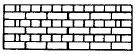
- 영국식 쌓기
- 프랑스식 쌓기
- 네덜란드식 쌓기
- 미국식 쌓기
(정답률: 78%)
49. 다음 그림은 어떤 공법을 나타낸 그림인가?
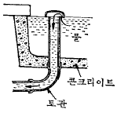
- 호안공
- 집수지
- 배수공
- 일류공
(정답률: 46%)
50. 다음 그림에서 (A)점과 (B)점의 차는 얼마인가? (단, 등고선 간격은 5m이다.)
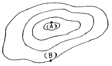
- 10m
- 15m
- 20m
- 25m
(정답률: 77%)
51. 응애만을 죽이는 농약의 종류에 해당하는 것은?
- 살충제
- 살균제
- 살비제
- 살서제
(정답률: 85%)
52. 잔디밭 1평 (3.3 m2)에 규격 30 ㎝ x 30 ㎝의 잔디를 심고자 한다. 약 몇 장의 잔디가 필요한가?
- 11장
- 24장
- 30장
- 36장
(정답률: 55%)
53. 침엽수와 상록활엽수 이식 적기로 가장 좋은 것은?
- 이른 봄과 장마철
- 여름과 휴면기인 겨울
- 초겨울과 생장기인 늦은 봄
- 늦은 봄과 꽃이 진 시기
(정답률: 69%)
54. 벽돌쌓기의 내용이 옳지 않은 것은?
- 가능한한 막힌 줄눈으로 쌓는다.
- 하루에 쌓는 높이는 2.0m이하로 한다.
- 벽돌은 어느 부분이든 균일한 높이로 쌓아 올라간다.
- 치장 줄눈은 되도록 빠르게 한다.
(정답률: 68%)
55. 다음중 수명이 가장 긴 전등은?
- 백열전구
- 할로겐등
- 수은등
- 형광등
(정답률: 71%)
56. 느티나무 수고 4m, 근원직경 10㎝, 수관폭 2.5m를 식재 할때 식재품의 적용 방법으로 가장 좋은 것은?
- 수고에 의한
- 근원 직경에 의한
- 수관폭에 의한
- 흉고 직경에 의한
(정답률: 53%)
57. 계단의 축상(蹴上)높이가 12㎝일 때 답면(踏面)의 너비는 다음 중 어느 것이 가장 적합한가?
- 20 - 25㎝
- 26 - 31㎝
- 31 - 36㎝
- 36 - 42㎝
(정답률: 55%)
58. 지주 세우기에서 일반적으로 대형의 나무에 적용하며 경관적 가치가 요구되는 곳에 설치하는 지주 이름은?
- 이각형
- 삼발이형
- 삼각 및 사각지주
- 당김줄형
(정답률: 83%)
59. 경관석 놓기 설명으로 가장 알맞은 것은?
- 경관석 주변에는 식재를 하지 않는다.
- 일반적으로 3, 5, 7 등 홀수로 배치한다.
- 경관석은 항상 단독으로만 배치한다.
- 경관석의 배치는 돌 사이의 거리나 크기 등을 조정 배치하여 힘이 분산되도록 한다.
(정답률: 81%)
60. 단면도, 입면도, 투시도 등의 설계도면에서 물체의 상대적인 크기를 느끼기 위해서 그리는 내용이 아닌 것은?
- 수목
- 자동차
- 사람
- 연못
(정답률: 66%)